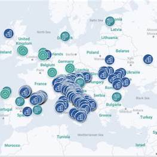

<
Құрметті қазылар алқасы, ұстаздар және ғылыми қауым!
Мен Анарабай Бақдәулет №68 жалпы орта білім беретін мектебінің 10 А сынып оқушысымын! Менің ғылыми жобамның тақырыбы «Қалдықсыз өндіріс географиясы»
«Адамзаттың табиғатсыз күні жоқ, табиғаттың оны айтарға тілі жоқ» дей келе
Бүгінгі таңда адамзат алдында тұрған ең үлкен сындардың бірі – табиғатты сақтау, ресурстарды ұқыпты пайдалану және өндірістің экологиялық қауіпсіздігін қамтамасыз ету. Біз тұтыну көлемі жыл сайын өсіп жатқан, ал табиғи ресурстар керісінше азайып бара жатқан дәуірде өмір сүріп жатырмыз. Осындай жағдайда қалдықсыз өндіріс – тек технологиялық жаңа бағыт емес, ол – біздің болашаққа деген жауапкершілігіміздің көрінісі.
Менің ғылыми жобам – қалдықсыз өндірістің географиясын, яғни оны түрлі аймақтарда қолдану ерекшеліктерін, табиғи, экономикалық және технологиялық факторлар арқылы қалай дамитынын зерттеуге бағытталған. Өйткені қалдықсыз өндіріс – белгілі бір зауыттың не кәсіпорынның ішкі мәселесі ғана емес, ол тұтас аймақтың экономикалық болашағын анықтайтын стратегиялық шешім.
Бүгін біз дамыған елдер тәжірибесінен көріп отырғанымыздай, қалдықсыз технология енгізілген жерде:
⦁ қоршаған ортаға түсетін зиян азаяды;
⦁ жаңа жұмыс орындары ашылады;
⦁ инновациялар дамиды;
⦁ өңірдің бәсекеге қабілеті артады.
Бұл – география ғылымының нақты өмірмен тікелей байланысының дәлелі. Себебі әр аймақтың табиғи ресурсы, климаты, халық тығыздығы, өндірістік құрылымы әртүрлі. Сондықтан қалдықсыз өндірісті енгізудің географиялық заңдылықтарын түсіну — болашақтың жасыл экономикасына қадам басудың негізгі құралы.
Менің мақсатым – тек теорияны зерттеу емес. Мен көз жеткізгім келеді: егер біз қоршаған ортаны қорғауда белсенді болсақ, әрбір аймақта қалдықсыз өндірісті дамытуға толық мүмкіндік бар. Бұл – біздің планетамызға жасалған ең үлкен сый, келешек ұрпақ алдындағы борышымыз деп ойлаймын.
Жобамның міндеттері:
Қалдықсыз өнім мен қалдықсыз өндіріс ұғымын түсіндіру;
Әлемдегі және Қазақстандағы қалдықсыз өндіріс орындарын анықтау;
Географиялық тұрғыда қалдықсыз өнімдердің таралуын карта арқылы көрсету;
Қалдықсыз өндірістің артықшылықтары мен кемшіліктерін сараптау;
Болашақта қалдықсыз өнімдерді дамыту жолдарын ұсына отырыып, Қазақстанымның тұрақты дамуына өз үлесімді қосу.
Жобамның өзектілігі
Қазақстан үшін маңыздылығы – еліміздің индустрияландыру бағыты мен "жасыл" технологияларды дамыту стратегиясы аясында қалдықсыз өндіріс географиясын зерттеу аса өзекті.
Ғылыми-тәжірибелік мәні – бұл зерттеу нәтижелері аймақтық даму жоспарларын, экологиялық бағдарламаларды, өндірісті орналастыру шешімдерін қабылдауға көмектесе алады.
Ғылыми жаңалығы
Қалдықсыз өндіріс ұғымына географиялық тұрғыдан алғаш рет кешенді талдау жасалды – өндіріс орындарының кеңістіктік орналасу ерекшеліктері, экологиялық жүктеме және қайта өңдеу инфрақұрылымы өзара байланыста қарастырылды.
Қазақстан аумағындағы қалдықсыз өндіріс нүктелерінің географиясы талданды – қайта өңдеу зауыттары мен экологиялық өндірістердің карта-схемасы жасалып, олардың таралу заңдылықтары анықталды.
Аймақтардың қалдықсыз өндіріс әлеуеті салыстырмалы түрде бағаланды – табиғи ресурстар, инфрақұрылым, логистика және экологиялық саясатқа байланысты өңірлік айырмашылықтар көрсетілді.
Қалдықсыз өндірісті дамытудың геоэкологиялық және әлеуметтік-экономикалық әсерлері айқындалды – қалдықсыз өндірістің жергілікті тұрғындарға, қоршаған ортаға және өңірлік экономикаға әсері сарапталды.
Қалдықсыз өндірісті дамытудың географиялық кластерлік үлгісі ұсынылды –қалдықтарды өңдеу мен қайта пайдалану инфрақұрылымын біріктіретін аймақтық даму тұжырымдамасы жасалды (қала-ауыл, өнеркәсіп-логистика өзара байланысы негізінде).
Кіріспе
Қазіргі заманда өндірістің қарқынды дамуы қоршаған ортаға түсетін жүктемені арттырып, табиғи ресурстардың сарқылу қаупін күшейтуде. Осыған байланысты қалдықсыз өндіріс технологияларын енгізу — экологиялық қауіпсіздікті сақтау мен тұрақты дамуға қол жеткізудің негізгі шарттарының бірі. Қалдықсыз өндірістің географиясын зерттеу түрлі аймақтарда бұл технологиялардың таралуына әсер ететін табиғи, экономикалық және инфрақұрылымдық факторларды анықтауға мүмкіндік береді. Бұл жоба қалдықсыз өндірісті дамыту мүмкіндіктерін аймақтық тұрғыдан бағалап, оның экологиялық және экономикалық тиімділігін көрсетуге бағытталған.
Қалдықсыз өнім тұжырымдамасы — өндіріс процесінде ресурстарды тиімді пайдаланып, шикізатты толық өңдеу арқылы қоршаған ортаға зиянды қалдықтардың мүлде шығарылмауын немесе ең төмен деңгейге жеткізілуін көздейтін экологиялық және экономикалық модель. Бұл тұжырымдама өнімнің бүкіл өмірлік циклында — өндіруден бастап тұтыну және қайта өңдеуге дейін — қалдықтың пайда болуын болдырмауды мақсат етеді.
Өнім түрі Қалдықсыз сипаттамасы
Мата сөмкелер Пластик пакеттің орнына қайта қолдануға болады
Шыны бөтелкелер Көп мәрте қолдануға жарамды, қайта өңделеді
Биоыдырайтын ыдыс-аяқ Табиғи материалдан жасалған, экологияға зиянсыз
Қайта зарядталатын батарея Бір реттік батареяларға қарағанда экологиялық таза
Экологиялық қаптама Қағаздан, жүгері крахмалынан жасалған қаптамалар
Қалдықсыз өнімнің географиялық таралуы
Қалдықсыз өнімнің географиялық таралуы аймақтың табиғи ресурстарына, өнеркәсіптің даму деңгейіне, технологиялық мүмкіндіктеріне және экологиялық саясаттың күштілігіне байланысты. Жоғары технологиясы дамыған, экологиялық талаптары қатаң елдер мен өнеркәсіптік аймақтарда қалдықсыз өндіріс кеңірек таралған, ал инфрақұрылымы әлсіз және қаржылық қолдауы аз өңірлерде таралу деңгейі төмен.
Әлем бойынша таралу аймақтары
Аймақ/Ел Қалдықсыз өнімдер мен өндірістің дамуы
Еуропа (Германия, Нидерланд, Швеция, Норвегия) Циркулярлы экономика саясаты бар, қайта өңдеу мен қалдықсыз өнім өндірісі жолға қойылған. «Zero Waste Europe» сияқты қозғалыстар белсенді.
Жапония Қалдықтарды сұрыптау мен қайта өңдеуде алда. Камикатцу қаласы – 100% қалдықсыз өмір салтына көшкен әлемдегі алғашқы қала.
АҚШ Кейбір қалалар мен штаттарда (мысалы, Сан-Франциско) қалдықсыз өмір салты насихатталады. Жасыл стартаптар дамуда.
Оңтүстік Корея, Сингапур Мемлекеттік деңгейде экологиялық өнімдерге қолдау бар, қалдықсыз технологиялар енгізілуде.
Қазақстан, Ресей, Орта Азия Қалдықтарды қайта өңдеу инфрақұрылымы дамып келе жатыр. Қалдықсыз өндіріс – енді қалыптасып жатқан бағыт.
Географиялық таралуға әсер ететін факторлар
Қалдықсыз өнімдердің таралуы аймақтық ерекшеліктерге байланысты:
Фактор Сипаттамасы
Экономикалық даму деңгейі Дамыған елдерде қалдықсыз өнімдерге сұраныс жоғары, себебі экосаналы тұтыну мәдениеті қалыптасқан.
Технологиялық даму Инновациялық технологиялар қалдықтарды азайтуға мүмкіндік береді.
Мемлекеттік саясат Экологиялық заңдар мен бағдарламалар таралу деңгейін анықтайды.
Халықтың экологиялық сауаттылығы Экосаналы қоғам қалдықсыз өнімдерге көбірек сұраныс жасайды.
Инфрақұрылым Қайта өңдеу, сұрыптау, тасымалдау жүйесі бар аймақтарда таралу жоғары.
. Қазақстандағы таралу ерекшеліктері
Астана, Алматы, Шымкент қалаларында қалдықтарды сұрыптау және қайта өңдеу зауыттары жұмыс істейді; «KazWaste» қауымдастығы қалдықтарды басқару жүйесін дамытумен айналысады; Экологиялық стартаптар (мысалы, экосөмке, қайта қолданылатын ыдыс өндірушілер) көбейіп келеді; Бірақ қалдықсыз өнімдердің кең таралуы үшін инфрақұрылым мен экосананы арттыру қажет. Қалдықсыз өнімдердің географиялық таралуы аймақтардың даму деңгейіне, саясатқа және халықтың экологиялық мәдениетіне тікелей байланысты. Дамыған елдер бұл бағытта көш бастап тұр, ал Қазақстан сияқты елдерде бұл сала енді дамып келе жатқанымен, болашағы зор.
Қалдықсыз өнімге көшу жолдары
1. Экологиялық сананы қалыптастыру
Халық арасында экологиялық білім мен мәдениетті дамыту;
Экологиялық өмір салтын насихаттау (экоөмір, экосөмке, қайта қолдану мәдениеті).
2. Жасыл технологияларды енгізу
Қалдықсыз немесе аз қалдықты өндірістік технологияларды қолдану;
Энергия мен ресурстарды үнемдейтін инновациялық шешімдерге көшу.
3. Қайта өңдеу және сұрыптау жүйесін дамыту
Қалдықтарды бөліп жинау инфрақұрылымын құру;
Қайта өңдеуді табысты бизнес көзіне айналдыру.
4. Экологиялық саясат пен мемлекеттік қолдау
Заңнамалық деңгейде экологияны қорғау шараларын күшейту (мысалы, пластикке тыйым салу);
Қалдықсыз өнім өндірушілерге субсидия беру, салықтық жеңілдіктер жасау.
Қалдықсыз өнімге көшу жолдары
1. Экологиялық сананы қалыптастыру
Халық арасында экологиялық білім мен мәдениетті дамыту;
Экологиялық өмір салтын насихаттау (экоөмір, экосөмке, қайта қолдану мәдениеті).
2. Жасыл технологияларды енгізу
Қалдықсыз немесе аз қалдықты өндірістік технологияларды қолдану;
Энергия мен ресурстарды үнемдейтін инновациялық шешімдерге көшу.
3. Қайта өңдеу және сұрыптау жүйесін дамыту
Қалдықтарды бөліп жинау инфрақұрылымын құру;
Қайта өңдеуді табысты бизнес көзіне айналдыру.
4. Экологиялық саясат пен мемлекеттік қолдау
Заңнамалық деңгейде экологияны қорғау шараларын күшейту (мысалы, пластикке тыйым салу);
Қалдықсыз өнім өндірушілерге субсидия беру, салықтық жеңілдіктер жасау. Қазақстандағы жағдай
Қазақстан – табиғи ресурстарға бай, индустриясы қарқынды дамып келе жатқан мемлекет. Алайда, өндірістік және тұрмыстық қалдықтардың көлемі жылдан жылға артып келеді. Бұл өз кезегінде қоршаған ортаға елеулі экологиялық жүктеме түсіріп отыр. Осы жағдай қалдықтарды азайту, қайта өңдеу және қалдықсыз өндіріс тұжырымдамасын енгізу қажеттілігін туындатты.
Мемлекеттік стратегиялар мен бағдарламалар
Қазақстанда қалдықсыз технологияларды енгізуге бағытталған бірқатар маңызды құжаттар қабылданған:
"Жасыл экономикаға көшу тұжырымдамасы" (2013 ж.)
→ Мақсат: 2030 жылға дейін қалдықтардың кемінде 40%-ын қайта өңдеу.
"Қазақстанның 2060 жылға дейінгі көміртегі бейтараптығы стратегиясы"
→ Өндіріс пен тұтыну салаларында тұрақты экологиялық әдістерді енгізуді көздейді.
Экологиялық кодекс (2021 ж. жаңа редакция)
→ Қайта өңдеуге, қалдықсыз технологияларға және экологиялық тиімділікті арттыруға басымдық берілген.
3. Өндірістік және өңдеу инфрақұрылымы
Қалдықтарды өңдеу жүйесі Қазақстанда әлі толық дамымаған, бірақ оң өзгерістер байқалады:
15
Көрсеткіш Мәліметтер
Жалпы қалдық көлемі Жылына 4–5 млн тонна тұрмыстық қатты қалдық (ТҚҚ)
Қайта өңдеу деңгейі 2022 ж. – шамамен 20–22% (2030 жылға мақсат – 40%)
Өңдеу зауыттары Астана, Алматы, Шымкент, Қарағанды, Ақтөбе қалаларында жұмыс істейді
Экологиялық кәсіпорындар “KazWaste” қауымдастығы, “Green Recycle”, “Replastik”, “Тазарт” сияқты кәсіпорындар қалдықтарды қайта өңдеумен айналысады
4. Қалдықсыз өнімге көшу бастамалары
Соңғы жылдары қалдықсыз өмір салтын ұстанатын ұйымдар мен стартаптар саны артуда:
Эко-дүкендер мен қайта қолданылатын өнімдер сататын онлайн платформалар (экоқап, экоыдыс).
Мектептер мен ЖОО-да экосағаттар, экологиялық үйірмелер.
Жастардың экобастамалары: экобөлме, экосөмке, экофест, “Плоггинг” (қоқыс жинау марафондары).
Қалалық әкімдіктер экосананы көтеруге бағытталған әлеуметтік жобалар жүргізуде.
5. Қиындықтар мен кедергілер
Қазақстанда қалдықсыз өнім мен өндірісті дамытуда бірқатар қиындықтар бар:
Қайта өңдеу инфрақұрылымының жетіспеуі;
Халық арасында экологиялық мәдениеттің төмендігі;
Қалдықтарды сұрыптау мен жинау жүйесінің әлсіздігі;
Экологиялық жобаларға инвестицияның аздығы.
6. Болашағы
Қазақстанда қалдықсыз өнім мен өндірісті дамыту үшін үлкен мүмкіндік бар:
Циркулярлы экономикаға көшу үшін әлеует жоғары;
Мемлекеттік қолдау мен халықаралық серіктестік артып келеді;
Халықтың экологиялық сауаты біртіндеп өсуде;
Экологиялық стартаптар мен инновациялық жобалар саны көбейіп келеді.
Шымкент
Тұрмыстық қатты қалдықтарды өңдеу зауыты
Шымкентте тұрмыстық қалдықтарды сұрыптап, өңдеу және кәдеге жарату зауытын салу жоспарланып отыр.
– Бұл “Green Line” зауыты санына енгізілген, кеткен полигондар ретке келтірілуде (1,5 млн тонна жартылай көмілген және 250 мың тонна шашылған қалдықтар)
Өндіріс аймақтарының кеңеюі
Шымкентте «Оңтүстік», «Жұлдыз», «Бозарық» сияқты индустриалдық аймақтар дамуда, жаңа өндіріс орындары салынып жатыр, жер телімдері бөлініп, құрылыс-коммуникациялар тартылуда. Ғылыми жобалар, технологиялар
Құрылыс нарығы үшін өндірістік қалдықтарды қайта өңдеп, құрылыс материалдарын шығару жөнінде ғылымистартап зерттеулер бар. Астана
Astana Recycling Plant
Астана қаласында тұрмыстық қалдықтарды сұрыптауөңдеумен айналысатын зауыт бар.Бұл зауыт бастапқыда тәулігіне 400 тонна қалдық қабылдаса, кейінгі жылдары қалдық көлемі өскен сайын мүмкіндігі жетпей қалғаны, жабдықтардың тозуы себеп болды.
«Zero Waste» ЖШС & «Интер Мульти Сервис» ынтымақтастығы
Астанадағы Zero Waste компаниясы және Алматыдағы Интер Мульти Сервис компаниясы макулатураны қайта өңдеу бағытында меморандумға қол қоя отырып, қалдықтарды бөлек жинау мен қайта өңдеу мәдениетін арттыруға ұмтылуда. Техноэкопарк зауыты
«ADC TAZA A’LEM» ЖШС тұрмыстық қалдықтарды өңдеу жөніндегі техноэкопарк зауытын салуды қолға алып жатыр. Бұл жоба қалдықтарды басқару мен өңдеуде жаңа үлгі болмақ.
Алматы.
Полиэтиленді өңдеу зауытын құру
Алматыда полиэтиленді қайта өңдеу зауытын салу туралы жоспар бар.
«БізАлматымыз» жобасы
Бұл жоба экологиялық бағыттағы стартаптар мен жобаидеяларды қолдау, пластик қалдықтарды қайта өңдеу, экологиялықсананың өсуіне ықпал ету мақсатында құрылып жатыр.
Қазақстанда қалдықсыз өнім мен өндіріс бағытындағы өзгерістер басталды, бірақ әлі де жүйелі жұмыс пен қолдау қажет. Егер мемлекет, қоғам және бизнес өкілдері бірігіп әрекет етсе, алдағы жылдары Қазақстанда қалдықсыз технологиялар мен экосаналы тұтыну мәдениеті кең өріс алады.
Заңнама мен стратегиялық құжаттар:
2021 жылы «Экология жөніндегі» жаңа Кодекс қабылданды, ол қалдықтарды басқару, өндірістік және тұрмыстық қалдықтарды реттеу бағытында жауапкершілікті нақтырақ белгілейді. Елде жасыл экономикаға көшу, қалдықтарды өңдеу мөлшерін арттыру, толық қамтылған жүйе құру сияқты ұлттық стратегиялар бар.
Мысалы, тұрғын үй-коммуналдық қалдықтарды өңдеу мен қайта пайдалану көрсеткішін 2030 жылға қарай 40%-ға жеткізу жоспары бар
. «Taza Kazakhstan» концепциясы (2024–2029) сияқты бастамалар жүзеге асуда, экологиялық сананы қалыптастыру, қалдықты қайта өңдеу көрсеткіштерін арттыру мақсатымен. Инфрақұрылымдық жобалар: 2024 жылы үкімет 37 жаңа тұрмыстық қатты қалдықтарды өңдеу зауыттарын салу жоспарын бекітті, барларын жаңарту да қарастырылған. Бұл жобалар жалпы өңдеу қуатын жылына ~1,2 миллион тоннадан астам етуге тиіс.
Сорттау желілері де кеңейтілуде: қазіргі 1,7 млн тонна/жыл өңдеу қуаты 4,7 млн тонна деңгейіне дейін жеткізілмек. Өнеркәсіптік, агроқалдықтар, биомасса қалдықтарын биоотын, азық-түлік жанбайтын өнімдер жасау, жануарлар өңдеу қалдықтарын толық пайдалану секілді арнайы жобалар бар. Мысалы, Қостанайда ет өңдеу зауыты — almost zero waste кәсіпорын, онда малдың терісі, мүйізтіршіліктері, сүйектері т.б. бөліктері экспортқа немесе қосымша өндіріс үшін пайдаланылуда.
Қиындықтар мен шектеулер
Қалдықты қайта өңдеу деңгейі әлі де төмен — 2024 жылы тұрғынүйлік қатты тұрмыстық қалдықтардың тек ~26%-ы қайта өңделген, бұл мақсаты − 30%-ды асырмады. Экономикалық ынталандырулар жеткіліксіз немесе кейде нақты шаруашылық есепке сай емес: тарифтер, қайта өңдеу бойынша төлемдер, жинаутасымалдау шығындары толық өтелмейді. Инфрақұрылымның теңсіздігі: кейбір өңірлерде сорттау желілері, өңдеу зауыттары жоқ немесе ескірген. Экологиялық стандарттарға сай келмейтін полигондар көп. Халықтың экологиялық саналығы мен мінез-құлық өзгерісіне қатысты кедергілер бар — қалдықтарды бөлек жинау, тұтыну мәдениетін өзгерту керек. Басқару мен реттеу органдары арасында міндеттер бөлісу, жауапкершілік айқын болмауы, кейбір қалдық түрлеріне (медициналық, құрылыс, ауыл шаруашылығытық) қатысты заңнамалық және ұйымдастырушылық қосарлау немесе олқылықтар бар.
Келешек бағыттар мен ұсыныстар
Орталықтандырылған стратегияны қабылдау және іске асыру: жекелеген қалдық түрлерін (құрылыс, ауыл шаруашылығы, медициналық т.б.) қамтитын толық жүйе қажет. Мемлекеттік, өңірлік, жергілікті деңгейде міндеттер мен ресурстарды нақты бөлістіріп, үйлестірілген жұмыс жасау маңызды.
Инвестиция мен технологияларды тарту: заманауи өңдеу зауыттары, сорттау желілері, қалдықтарды қайта пайдалану/қайта өңдеу технологиялары — барынша импортталатын сенімді технологияларды қолдану.
Экономикалық механизмдерді күшейту: қайта өңдегіштер үшін субсидиялар, салықтық жеңілдіктер, тарифтерді қайта қарау, қалдық өндірушілерге кеңейтілген жауапкершілік (extended producer responsibility) енгізу.
Қоғамдық сананы арттыру: халықтың қалдықтарды бөлек жинауы, қайта қолдану, азайту принциптері туралы білім беру, жарнамалар, мектептерде, ЖООларда экология сабақтарын күшейту.
Көрнекі модельдер мен пилот жобалар: кейбір өңірлерде экологиялық эксперименттер, «жасыл қала» жобалары, zero waste ұйымдары арқылы үлгі боларлық жобаларды көбейту.
Мониторинг пен есеп беру жүйелерін жетілдіру: қалдықтар саны, өңдеу көрсеткіштері бойынша нақты деректерді жинау, ашық есеп беру, мақсаттарға жету деңгейін жария ету.
Қалдықсыз өнімдердің таралу картасы.
1зерттеу практикасы

Бірінші сурет — Европа елдеріндегі Zero Waste Cities (Нөлдік қалдық қалалары) бағдарламасына қат ысып жатқан муниципалитеттердің орналасуы.әлем бойынша қалдықтар өндірісі мен тұтыну көлеміне қарай елдер бөлігі.Италия мен көршілес елдердегі қалдықсыз муниципалитеттердің тығыздығы.әлем елдерінің әрбір адамға түсетін тұрмыстық қатты қалдықтар мөлшері. Бұл карта қалдықтың көп немесе аз шығатын аймақтарды көрсетеді.
Қазақстан бойынша да бірнеше маңызды жобалар мен орналастыру нүктелері бар:
Қазақстанда қалдықтарды қайта өңдеу зауыттары мен техно-эко паркі жобасы іске қосылмақ; ол жылына 120 000 тонна қалдықты сұрыптап, оның ішінде 80 000 тонна органикалық қалдық өңдейді. Өзге өңірлерде 37 жаңа қалдық өңдеу зауытын салу көзделуде (сүйлесімді қаржыландыру арқылы). wkr.invest.gov.kz
Сонымен қатар, мемлекеттік бағдарламалар, индустриялық даму жобалары, кәсіпорындар мен экобағдарламалардың жүзеге асуы қалдықсыз өнімдер мен өндірістің таралуын арттыруда. Өз жобаңыз үшін Қазақстандағы қалдықсыз өнімдердің нақты таралу картасын жасау үшін былай істеуге болады:
2-зерттеу практикасы
Деректер жинау
Қай қалаларда қайта өңдеу зауыттары бар,
Қай өңірлерде экологиялық бастамалар көп,
Қалдықсыз өнім дүкендері, стартаптардың орналасуы.
Картографиялық бағдарламалар қолдану
GIS жүйелері (QGIS, ArcGIS),
Онлайн карталар (Google My Maps, Mapbox) — нүктелерді қою, өңірлерді бояу.
Критерийлер анықтау
Қайта өңдеу мүмкіндігі, материал пайдаланудың экологиялық категориясы, қалдық азайту бастамалары, мемлекеттік қолдауы.
20
Визуализация жасау
Түрлі түсті маркерлер: жоғары / орташа / төмен таралу аймақтары,
Легенда, түсіндірмелерін қосу.
3-зерттеу практикасы
Заңнамалық және нормативтік шаралар
Қайта қаралған қалдықтарды басқару ережелері
2020 жылдың 28 желтоқсанынан бастап, өндіріс орындары өздері шығаратын қалдықтарды жинау, уақытша сақтау, қайта өңдеуге немесе жоюға тапсырмау (яғни, барып беретін ұйымдармен келісім жасау) міндетті
Қалдықтар бес классқа бөлінеді (өте қауіпті, аса қауіпті, орташа қауіпті, төмен қауіпті, қауіпті емес) және тиісті талаптар қойылады. Экологиялық Кодекс
“Экологиялық кодекс” заңнамасы қалдықтарды басқару, қалдықтарды минималдау, қайта пайдалану және энергияны қалдықтан өндіру (“wastetoenergy”) тәрізді механизмдерді енгізуді қарастырады. Кодексте өндірістік қалдықтардың көлемін біртіндеп азайту туралы талаптар, қалдықтарды генерациялаған кезде бақылау, тасымалдау, жою немесе өңдеу талаптары бар.
Жаңа стратегиялық жоспарлар мен концепциялар
Халықаралық және мемлекеттік деңгейде қалдық басқару стратегиясын жетілдіру жұмыстары жүргізілуде. “Жасыл экономикаға көшу” тұжырымдамасы және көміртегі бейтараптығын қамтамасыз ету стратегиялары аясында өндіріс қалдықтарын азайту механизмі қарастырылған.
Экономикалық және инфрақұрылымдық шаралар
Субсидиялар мен қаржылық ынталандырулар
Өндірістік қалдықтарды сұрыптап, қайта өңдейтін кәсіпорындарға, пластик қалдықтарын өңдеуге бағытталған жобаларға қаржылай қолдау жасалуда. Мысалы, 2025 жылы EcoQoldau бағдарламасы полимер қалдықтарын жинап, өңдеген кәсіпорындарға тоннасы үшін өтемақы төленеді. Инфрақұрылымның кеңеюі;
37 жаңа қатты тұрмыстық қалдықтарды өңдеу зауыттары салынбақ. Сорттау желілері, қайта өңдеу зауыттарының қуаттылықтары арттыру жоспарда.
Green tariff / Эко-салық
Бір реттік пластик пакеттерге, қайта өңделмейтін пластик қаптамаларға экосалық енгізу ұсынылған. Бұл өндірістік деңгейде қалдықтардың көбеюін шектеуге ықпал етеді.
21
Жазалау шаралары
Қоқысты белгіленген орындардан тыс тастау үшін айыппұл мөлшері көтерілуде. Бұл заңсыз қоқыс алаңдарының санын азайтуға бағытталған. Өндірістік практикалар мен кәсіпорындық шаралар
Өндірістік кәсіпорындардың өзіндік қалдық басқару жоспарлары
Мысалы, Petrochem Kazakhstan компаниясы өндірістік қалдықтарды жинау, сұрыптау, тасымалдау, пайдалану және қоршаған ортаға зиянсыз жою бойынша Waste Management Plan әзірлеген. Жалпы өндірістік ұйымдарда қалдықтар көлемін азайтуға арналған шаралар
Мысалы, KPO (“Kazakhstan Petroleum Operating” немесе ұқсас) компаниясы өндірістік қалдықтар көлемін азайту, залалсыздандыру, қайта пайдалану, қауіптілігін төмендету, сыртқы мердігерлер арқылы қалдықтарды өңдеуге тапсырту сияқты шараларды қолдануда. Энергияны қалдықынан өндіру (WastetoEnergy)
Қалдықтардан энергия алу механизмі заңнамада қарастырылған және алты қалада қалдықты жағу зауыттарының құрылысын жоспарлау туралы шешімдер қабылданған.
Қиындықтар мен кемшіліктер
Кейбір зауыттар мен кәсіпорындарда технологиялар ескірген немесе шикізатты толық өңдеу мүмкіндігі жоқ.
Қаржылық ресурстар мен инвестициялар жеткіліксіз болуы мүмкін.
Қалдық түрлерінің әртүрлілігі: қауіпті, аса қауіпті, сұрыпталмаған, сұрыптау инфрақұрылымының болмауы.
Заңдардың орындалуын бақылау және тиісті инфрақұрылымды қамтамасыз ету мәселелері.
Өндіріс қалдықтарын тоқтату үшін қандай шаралар қабылдануда?
Қалдықсыз технологияларды енгізу.Өндірістік процестерді автоматтандыру және оңтайландыру арқылы шикізаттың толық қолданылуын қамтамасыз ету.Жабық циклды өндірістер (өнімнің әр кезеңінде пайда болған қалдықтарды қайта пайдалану).Қайта өңдеу (рециклдеу) инфрақұрылымын дамытуҚатты және сұйық қалдықтарды жинау, сұрыптау, өңдеу кәсіпорындарын құру.Екінші реттік шикізат ретінде пайдаланылатын материалдарға сұранысты арттыру.Эко-дизайн және экологиялық стандарттарды енгізу.Өнімді жобалау кезінде оның бүкіл өмірлік цикліндегі
22
ISO 14001, EMAS секілді халықаралық экологиялық менеджмент стандарттарын қолдану.
Жасыл экономика мен тұрақты даму саясатын жүргізу.Мемлекеттік деңгейде қалдықсыз өндірісті қолдайтын заңдар мен бағдарламаларды қабылдау.Салықтық жеңілдіктер мен субсидиялар арқылы экологиялық таза өндірісті ынталандыру.
Қалдықтарды энергия көзі ретінде пайдалану.Қалдықтарды жағу арқылы жылу және электр энергиясын өндіру (waste-to-energy технологиялары).Биогаз, биоотын, пиролиз сияқты әдістер арқылы органикалық қалдықтарды тиімді пайдалану.
Сандық технологияларды қолдану.Өндірістегі қалдықтарды нақты есептеу мен мониторинг жүргізу үшін цифрлық платформаларды қолдану.«Ақылды зауыттар» (smart factories) және өнеркәсіптік IoT шешімдері арқылы қалдықтарды автоматты бақылау.
Кәсіпорын қызметкерлерін экологиялық оқыту.Экологиялық мәдениетті арттыру, қалдықсыз жұмыс істеу дағдыларын дамыту.Өндірісте қалдықты азайту бойынша ішкі мотивациялық бағдарламалар енгізу.
Қоғамдық бақылау және серіктестік.Қоғамдық ұйымдармен, экобастамалармен, ғалымдармен серіктестікте жұмыс жүргізу.Экологиялық а Өндіріс қалдықтарын және оны азайту жолдарына ұсыныс шықтық пен есептілікті қамтамасыз ету.
Өндіріс қалдықтарын және оны азайту жолдарына ұсыныс
Қазіргі өндірістік жүйелерде қалдықтардың мөлшерін азайту – экологиялық қауіпсіздік пен экономикалық тиімділіктің маңызды шарты. Бұл бағытта төмендегі нақты ұсыныстарды жүзеге асыру арқылы өндіріс қалдықтарын едәуір төмендетуге болады:
1. Қалдықсыз технологияларды өндіріске енгізу
Жабық циклді өндірістерге көшу (қалдықтарды қайта шикізат ретінде қолдану).
Энергия үнемдейтін және экологиялық қауіпсіз жабдықтарды пайдалану.
2. Өндірістік қалдықтарды қайта өңдеу жүйесін дамыту
Қайта өңдеуге болатын қалдықтарды сұрыптайтын автоматты жүйелерді енгізу.
Екінші реттік шикізат ретінде қолдануға болатын материалдарды (пластик, металл, шыны және т.б.) тиімді пайдаланатын кәсіпорындарды қолдау.
3. Эко-дизайн және өнімді оңтайлы жобалау
Өнімдердің қызмет ету мерзімін ұзарту, жөндеуге ыңғайлы дизайн жасау.
Артық қаптамалардан бас тарту және қайта пайдалануға болатын орамдарды қолдану.
4. Кәсіпорындар үшін экономикалық ынталандырулар
Экологиялық тиімді технологияларды енгізетін компанияларға салықтық жеңілдіктер беру.
Қалдықты қайта өңдеу арқылы қосымша табыс көздерін қалыптастыру.
5. Экологиялық аудит пен бақылауды күшейту
Кәсіпорындарда экологиялық аудит жүргізу міндетін енгізу.
Қалдықтарды заңсыз төгуге жол бермеу үшін айыппұл жүйесін жетілдіру.
6. Кәсіпорын қызметкерлерін оқыту және ақпараттандыру
Өндіріс персоналын экологиялық стандарттар мен қалдықсыз жұмыс әдістеріне үйрету.
Экологиялық мәдениетті қалыптастыру үшін ішкі мотивациялық бағдарламалар жасау.
7. Цифрлық технологияларды пайдалану
Қалдықтарды нақты есепке алу және бақылау үшін өндіріс процестерін цифрландыру.
Smart Factory (ақылды зауыт) және өнеркәсіптік IoT (заттар интернеті) жүйелерін қолдану.
8. Қоғамдық және ғылыми серіктестік
Ғылыми-зерттеу институттарымен бірлесе отырып экологиялық технологияларды әзірлеу.
Қоғамдық экологиялық ұйымдармен және еріктілермен бірлескен жобаларды жүзеге асыру.
Өндіріс қалдықтарын азайту тек экологиялық мәселе емес, сонымен қатар экономикалық, технологиялық және әлеуметтік артықшылықтарға ие стратегиялық бағыт болып табылады. Жоғарыда ұсынылған шараларды жүйелі түрде іске асыру арқылы тұрақты, қауіпсіз әрі тиімді өндіріс моделіне көшуге болады.
Қорытынды
Қалдықсыз өнім географиясы – бұл тек экологиялық мәселе емес, сонымен қатар экономикалық және әлеуметтік маңызды тақырып. Қалдықсыз өндіріс пен өнімдерді дамыту – болашақта тұрақты даму стратегиясының басты бағытына айналады. Қазақстан үшін де бұл салада үлкен әлеует бар. Ол үшін мемлекеттік қолдау, халықтың экологиялық білімін арттыру және инновациялық жобаларды дамыту қажет. Қазақстанда өндірістік қалдықтарды азайту және оларды басқару жүйесін жетілдіру бағытында маңызды әрі жүйелі қадамдар жасалуда. Қабылданып жатқан шараларды мынадай негізгі бағыттар бойынша қорытындылауға болады. Заңнамалық негіз күшейтілуде.
Жаңа Экологиялық кодекс, қалдықтарды басқару ережелері және "Жасыл экономикаға көшу" тұжырымдамасы өндірістік қалдықтарды азайтуға бағытталған.Қалдықтардың түрлері мен қауіптілік деңгейлеріне байланысты бақылау мен реттеу механизмдері енгізілген. Инфрақұрылым мен өңдеу қуаты артып келеді.Қайта өңдеу және сұрыптау зауыттарының саны көбейіп жатыр (37 зауыт салу жоспарланған).
Waste-to-Energy технологиясын енгізу басталды — қалдықты энергия көзіне айналдыру көзделуде. Экономикалық ынталандыру жүйелері жасалуда Қайта өңдеумен айналысатын кәсіпорындарға субсидия, өтемақы, жеңілдетілген несие қарастырылуда. Эко-салықтар арқылы ластайтын кәсіпорындарға қаржылық қысым жасалуда. Өндіріс орындарының экосанасы артып келеді.Көптеген ірі компаниялар өздерінің қалдықтарды басқару жоспарларын (Waste Management Plan) әзірлеп, іске асыруда.Қалдықты азайту, қайта пайдалану және қайта өңдеу процестері өндіріс мәдениетінің бір бөлігіне айнала бастаған. Дегенмен, шешілмеген мәселелер бар.Кей өңірлерде инфрақұрылым әлі дамымаған.Экологиялық мәдениет пен қадағалау жеткіліксіз.Қайта өңдеуге жарамайтын қалдықтар көлемі әлі де жоғары.
Өндіріс қалдықтарын тоқтату – ұзақ мерзімді мақсат, алайда Қазақстанда бұл бағытта тиімді заңдар, инфрақұрылымдық жобалар мен экономикалық ынталандырулар жүзеге асып келеді. Егер осы жұмыстар жүйелі жалғаса берсе, алдағы жылдары Қазақстан қалдықсыз өндіріс пен тұрақты дамуға негізделген жасыл экономика моделіне бір қадам жақындайды.
Қалдықсыз өнімге көшу — бұл жай ғана қалдықты азайту емес, тұтас ойлау жүйесін өзгерту. Қазақстан үшін бұл бағыт: Экологиялық қауіпсіздікке,экономикалық тиімділікке, халықаралық беделдің артуына жол ашады.
Құрметті қатысушылар!
Қалдықсыз өндіріс – ертеңгі күннің емес, бүгінгі күннің міндеті. Біз болашақты күтіп тұрмаймыз – болашақты өзіміз жасаймыз! Табиғатқа қамқор болу, экологиялық мәдениетті арттыру, жаңа технологиялар енгізу – бәрі біздің қолымызда.
Мен осы жоба арқылы сіздерге бір ғана ой айтқым келеді:
Егер біз өзгергіміз келсе — әлем өзгереді. Егер біз табиғатты қорғасақ — табиғат бізді қорғайды.
Назарларыңызға рахмет!
25
Пайдаланған әдебиеттер тізімі:
1. Қазақстан Республикасының Экологиялық кодексі (2021 ж.)
https://adilet.zan.kz
2."Жасыл экономикаға көшу" тұжырымдамасы, ҚР Президентінің Жарлығы №577, 2013 ж.
https://www.akorda.kz
3.Қазақстан Республикасы Стратегиялық жоспарлау және реформалар агенттігі – Экология және қалдықтарды басқару туралы ресми деректер
https://strategy2050.kz
4.Primeminister.kz – ҚР Премьер-Министрінің ресми сайты
→ Қалдықтарды қайта өңдеу, Waste-to-Energy жобалары туралы жаңалықтар
https://primeminister.kz
5. Astana Times – Waste Management Strategy in Kazakhstan (2024)
https://astanatimes.com
6.Sustainability MEA – Kazakhstan: Holistic Waste Management Strategy
https://sustainabilitymea.com
7.KazWaste – Қазақстанның қалдықтарды басқару бойынша қауымдастығы
https://kazwaste.kz
8.Мырзахметов А.Т. – Экологиялық география, оқу құралы, Алматы: 2020.
9.Сәрсенова Б.Ж. – Тұрақты даму және экологиялық сана, ғылыми мақала, "ҚазҰУ Хабаршысы", №3 (2022)
10.Petrochem Kazakhstan – Waste Management Plan
https://petrochem-kaz.kz
11.KPO B.V. – Қалдықтарды басқару жүйесі туралы есеп
https://www.kpo.kz
12. [Daryo.uz] – Қазақстанда қалдық өңдеу және эко-парк құрылысы (2024 ж.)
https://daryo.uz
13.[WKR Invest Portal] – Батыс Қазақстан өңіріндегі экологиялық жобалар
https://wkr.invest.gov.kz
26
Құрметті қатысушылар!
Қалдықсыз өндіріс – ертеңгі күннің емес, бүгінгі күннің міндеті. Біз болашақты күтіп тұрмаймыз – болашақты өзіміз жасаймыз! Табиғатқа қамқор болу, экологиялық мәдениетті арттыру, жаңа технологиялар енгізу – бәрі біздің қолымызда.
Мен осы жоба арқылы сіздерге бір ғана ой айтқым келеді:
Егер біз өзгергіміз келсе — әлем өзгереді. Егер біз табиғатты қорғасақ — табиғат бізді қорғайды.
Назарларыңызға рахмет!